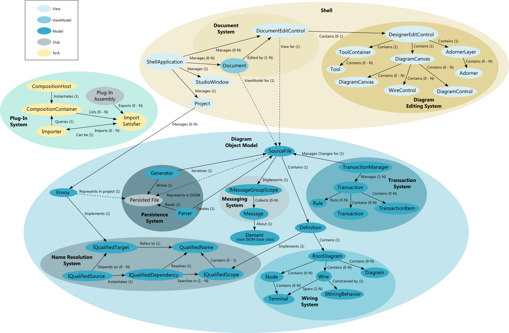

The Diagram SDK Overview
The NI Diagram SDK is a collection of .NET base classes, interfaces, and APIs designed to help you build:
- Diagrammatic models of computation (MoCs)
- Graphical MoC editors
Diagram SDK Architecture
The following diagram illustrates the high-level architecture of the NI Diagram SDK, which is based on the Model-View-ViewModel architectural pattern.

Diagram SDK Theory of Operation
The Diagram SDK consists of three primary components:
- The shell provides a graphical user interface framework for building graphical MoC editors. The shell includes the following sub-components:
- The document system manages, displays and edits the end user's source files.
- The diagram editing system displays and edits source file documents as graphical diagrams.
- The diagram object model (DiOM) provides a hierarchy of object-oriented classes and interfaces for modeling diagrammatic MoCs. The DiOM includes the following sub-components:
- The transaction system manages changes to DiOM Elements.
- The name resolution system allows diagrams to link to external resources, such as classes and methods defined in a separate assembly.
- The persistence system saves and loads your MoC editor's diagrams as XML documents.
- The messaging system collects messages about DiOM Elements, such as compiler errors and warnings.
- The wiring system manages wiring between nodes on a diagram.
- The plug-in system allows you to write classes and methods that plug into the shell and the DiOM.
Follow the Diagram SDK tutorials to learn more about using the Diagram SDK to create a simple graphical MoC editor.